1. 这个流程在做什么
Zhang 等， Genome Medicine 2025;17:98 把 H&E 切片切成瓦片，用对比学习 聚成 64 个细簇，对簇心做相关，再用 BIC 选择的高斯混合合并成约 15 个组织形态学 表型。之后每个病人表示为一个表型比例向量。这里的图像处理约定沿用该文自己的 代码（ZhoulabCPH/HIPOS）—— 224 px 瓦片、组织覆盖率过滤、Reinhard 染色归一化、对比学习训练的 CNN —— 输入契约则沿用 GHIST+， 它要求输入对齐好的 H&E、细胞核掩膜和配对的表达数据。
2. 把图像对齐到细胞上
Xenium 的细胞坐标单位是微米，H&E 是像素。10&x 为此提供了 he_imagealignment.csv，但直接使用会把细胞放到错误的 位置 —— 它的线性部分隐含 1.288 px/µm，而同一张 TIFF 的 OME 元数据写的是 0.2738 µm/px，两者相差 2.84 倍。 无论信哪一个，平移项的尺度也对不上。
所以这个变换是用独立证据逐项修出来的：

3. 瓦片与三种模态
| 切片 | 保留瓦片 | 瓦片像素 | µm/px | 瓦片边长 µm | 画面内细胞 |
|---|---|---|---|---|---|
| 5k | 722 | 224 | 1.08 | 243 | 96.8% |
| lc | 1,364 | 224 | 0.50 | 112 | 94.5% |
| luad | 954 | 224 | 0.46 | 104 | 93.2% |
瓦片为 224×224、约 1 µm/px、不重叠，只保留染色组织占
≥ 30% 且细胞数 ≥ 10 的瓦片。组织是按颜色而不是按暗度检测的：
亮度上的 Otsu 会否掉几乎所有瓦片，因为一个整块都是组织的瓦片，它自己的直方图
仍然会在中间附近分裂。
这里有一个必须说明的缺陷：瓦片定义在像素上，于是同一个
224 px 在三个样本上分别是 243 µm、112 µm 和 104 µm —— 相差 2.3 倍。不同切片
上的同一个表型因此不代表同样多的组织。这是本流程最严重的一个问题，
第 8 节会再回到它。
一个瓦片的特征向量由什么组成
4. 结果
| 模态组合 | 特征维度 | 瓦片数 | 细簇数 | 表型数 |
|---|---|---|---|---|
| 图像 + 表达 + 注释 | 183 | 3040 | 64 | 4 |
| 仅图像 | 128 | 3040 | 64 | 3 |
| 表达 + 注释 | 55 | 3040 | 64 | 3 |
| 仅表达 | 32 | 3040 | 64 | 3 |
5k —— 每个表型的代表性瓦片
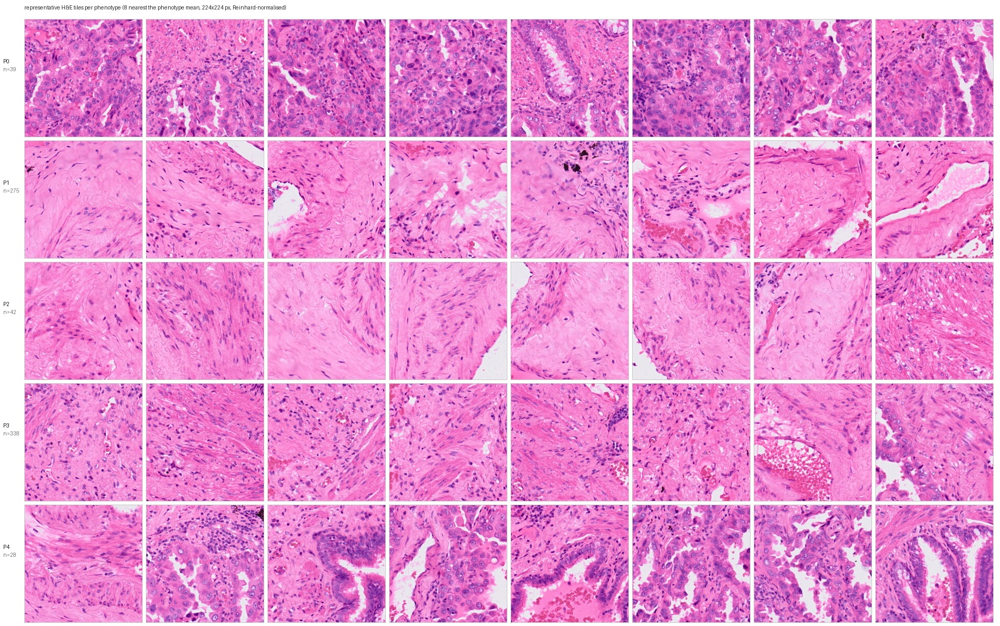
5k —— 各单元在切片上的位置
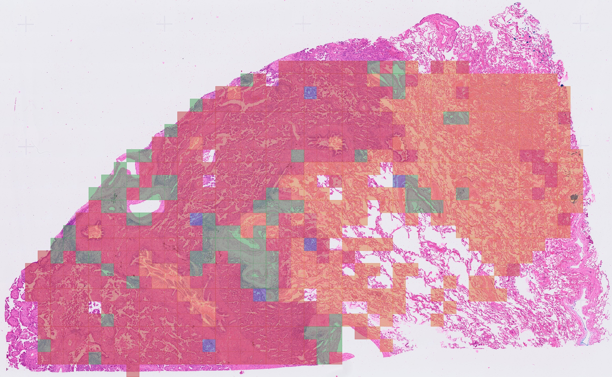
5k —— 组成
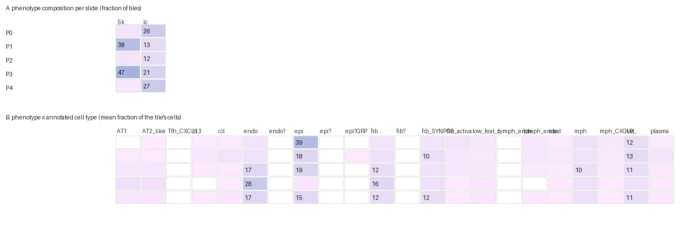
lc —— 第二张切片上的同样三张图


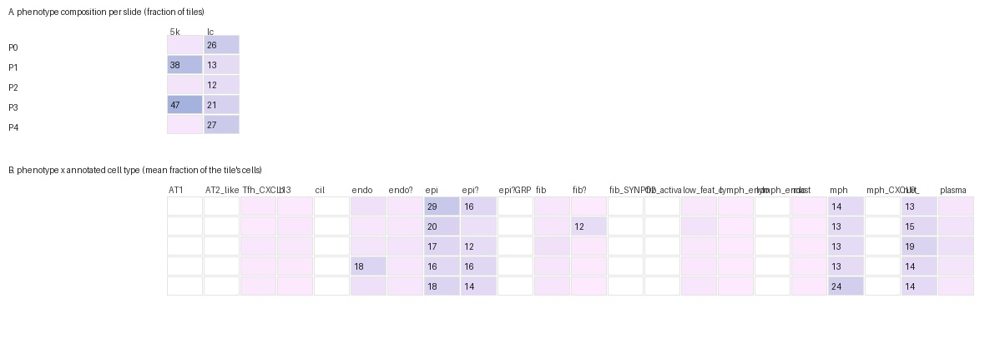
luad —— 第三个样本
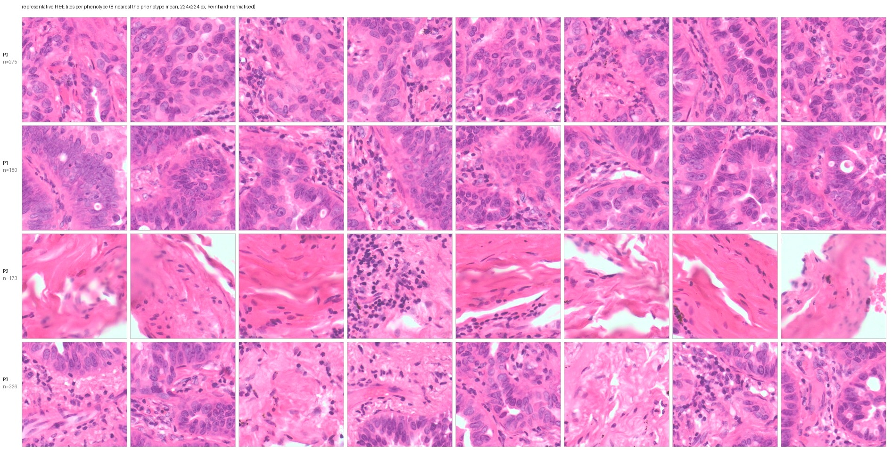
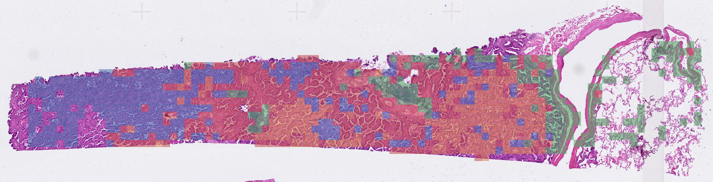
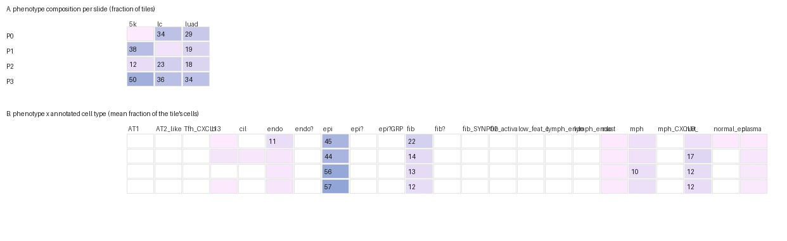
第三个样本不是前两个的复制。luad 的 H&E 是一张 45087×11580 的窄长切片，组织掩膜只占 50.8%（前两张是 66.7% 和 70.4%），它的注释词表也只有 10 种细胞类型（5k 有 17 种，lc 有 14 种）。把它放进联合聚类之后，注释并集从 22 个标签涨到 23 个，而表型数从 5 变成 4 —— 加入一个样本改变了全部三个样本的 划分，这正是联合聚类的应有之义，也是不能把两片的结果当作最终结果的原因。
5. 消融实验说明了什么
这个计数本身不是结论，也不该被当成结论 —— G 就是 BIC 在 64×64 相关矩阵上挑出 来的值，而这个量会因为与生物学无关的原因变动。消融真正要看的是画廊： 一个既能在纯图像运行中存活、也能在纯表达运行中存活的表型，才是两种模态 都认可的表型。看面板，不要看行数。
G 的上界被限制在 15。不设上限时 BIC 会随着分量增加一直变好， 因为 64 个点在 64 维空间里总能用更多高斯拟合得更好 —— 只用两个样本时，一次 早期运行在两千多个瓦片上挑出了 30 个「表型」，那是曲线拟合，不是结构。
6. 把学到的模式做成 3D 模型
每个模式表示为一堆细胞：它来自的那块组织，每个细胞画出细胞膜、细胞质和 细胞核。构造方式有两篇已发表的工作作为依据 —— CellSqueeze3D（Kong & Lu， Adv Sci 2026）提供细胞中心在切片内可以落在哪里的物理约束， Alon 等提供把结果建为显式图元 而不是体素体数据的方式，这样表型在模型内部仍然可辨认。
体渲染
第一次走 Blender 这条路放弃得太早了。错的是模型，不是渲染器：当时的三维 几何是从分割出的二维面积反解出来的，既需要可辨识性论证，又仍然留下 残留重叠。这里用的构造更简单、表现更好，也正是 Annotile 项目最终采用的那一套：

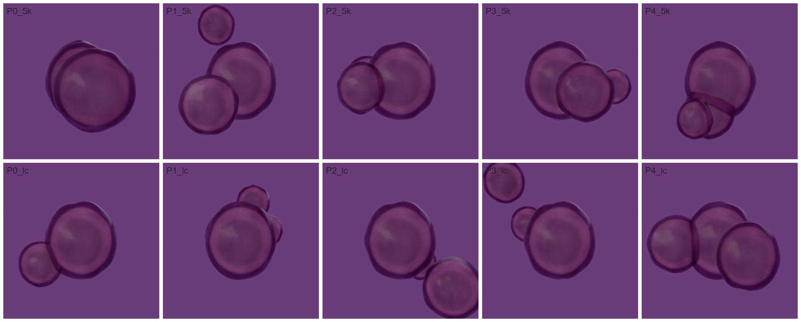
7. 这些模式构成一个进展序列吗？
下一个显而易见的问题是：这四个模式是否是同一过程的先后阶段。最接近的已发表 先例是 Vig、Wu 与 Lotter，他们用 基础模型嵌入 H&E 图像块，在嵌入上跑扩散伪时序 （Haghverdi 等 2016），并把结果 解读为疾病进展 —— 把输出描述为由静态快照拼出的「形态学电影」。这里用的是同一套 构造，作用在窗口嵌入上。
而且没有序数上的真值。参考文章用 Kendall 的 τ 对其排序与疾病 分期打分，并对所有分期顺序做置换检验。这里的模式是组织原型，不是阶段，所以那个 检验无法计算。这里报告的是每个模式在轴上占据一段区间的干净程度，以及排序在重复 抽样中存活的比例。
结果
| 样本 | 沿轴的顺序 | P3 的位置 | 最脆弱的一对 |
|---|---|---|---|
| 5k | P2 → P0 → P3 → P1 | P3 第 3 位 | P0–P2（21%） |
| lc | P0 → P2 → P3 → P1 | P3 第 3 位 | P0–P3（25%） |
| luad | P1 → P0 → P3 → P2 | P3 第 3 位 | P0–P2（55%） |
要看数字，不要看箭头。三个独立样本给出三种顺序 —— 5k 是 P2 → P0 → P3 → P1，lc 是 P0 → P2 → P3 → P1，luad 是 P1 → P0 → P3 → P2 —— 起点的模式各不相同，这意味着根的选择本身就不稳定，不该被过度解读。
但有一个位置在三个样本上完全一致：P3 在每一张切片上都排在第 3 位 （共 4 个）。结合下一节的交接统计，这是本分析能拿出的最强结论。
两个维度而不是一个
伪时序轴是一个一维摘要，而在这些数据上它是把模式叠起来，不是分开。对同一套 融合特征做 UMAP 和 t-SNE 回答的是另一个问题：这些模式是彼此分离的孤岛，还是一条 连续的流形？三个样本用的是完全相同的 183 维特征块（注释块按并集词表铺开）， 所以一个模式在这里的位置和它在轴上的位置描述的是同一个对象。
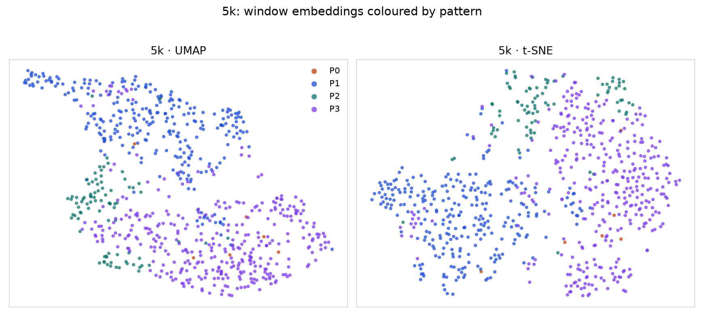
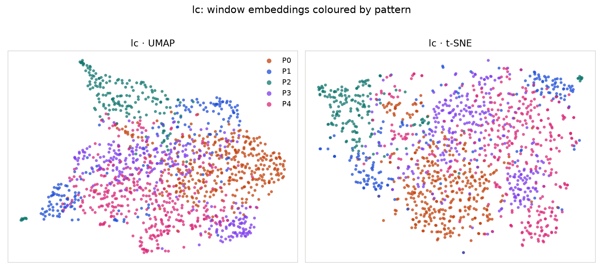
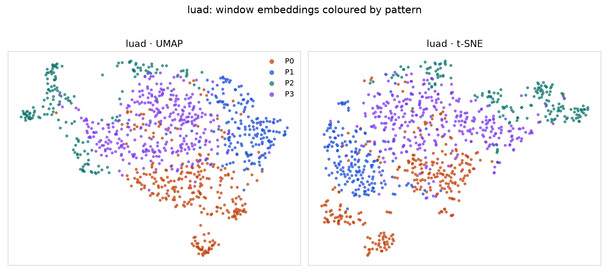
模式在切片上交接的位置
一张模式图说的是哪个模式在哪里；它没有说哪些模式相接。那是一个独立且可以直接 计数的对象 —— 每一对相邻、且被分到不同模式的窗口就构成一次交接 —— 它不需要 嵌入、不需要伪时序、也不需要模型。把它们数出来，就得到组织自身的一张邻接矩阵。
| 样本 | 窗口数 | 交接次数 | P3 占比 | 最高频的几对 |
|---|---|---|---|---|
| 5k | 722 | 308 | 84% | P1–P3 132 · P2–P3 112 · P1–P2 41 |
| lc | 1364 | 971 | 71% | P0–P3 386 · P2–P3 265 · P0–P2 252 |
| luad | 954 | 587 | 78% | P0–P3 200 · P1–P3 151 · P2–P3 106 |
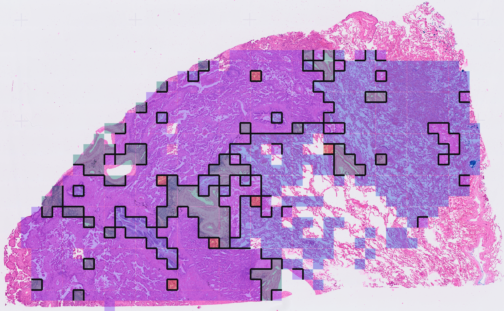
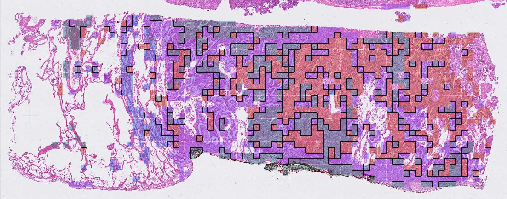
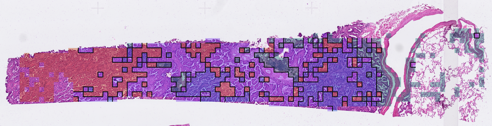
- 空间交接（本节）：P3 参与 71–84% 的相邻异物边界。
- 扩散排序（上节）：P3 在三个样本的轴上都是第 3 位（共 4 个）。
- 细胞组成（第 6 节）：P3 的组织块始终是混合表型 —— 5k 的 P3 是 AT2_like + cil + fib + plasma，luad 的 P3 是 b + fib + nkt + plasma —— 而不是像 5k 的 P2 那样清一色 cil。一个纯粹的细胞类型不可能成为界面。
但要注意反面：起点的模式、其余三者的相对次序、以及所有中位数的 具体数值，在三个样本之间都不一致。能被支持的只有 P3 这一个位置，不是一整条谱系。
模式之间的迁移方向
上一节数出了哪些模式相接，但邻接本身没有方向。要给出方向，需要三条规则， 和 Annotile 的做法一致：
| 样本 | 根 | 动画走的那一支 | 有向边数 |
|---|---|---|---|
| 5k | P2 | P2 → P0 → P3 → P1 | 3 |
| lc | P0 | P0 → P3 → P1 | 3 |
| luad | P1 | P1 → P0 → P3 → P2 | 3 |
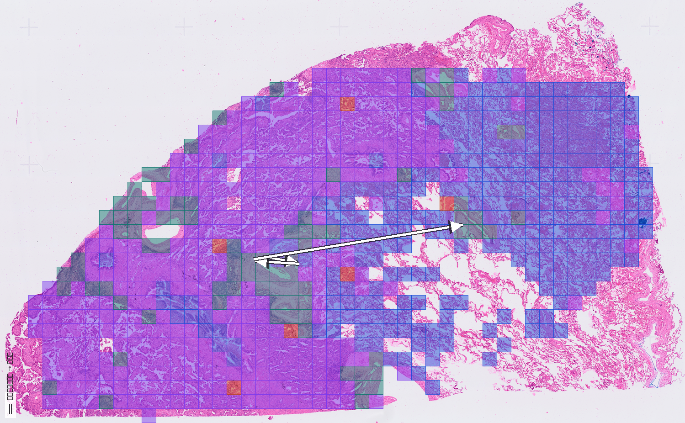
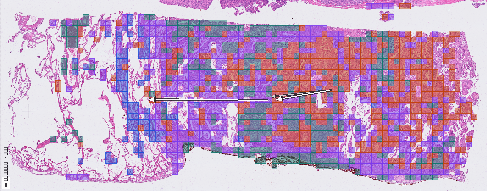
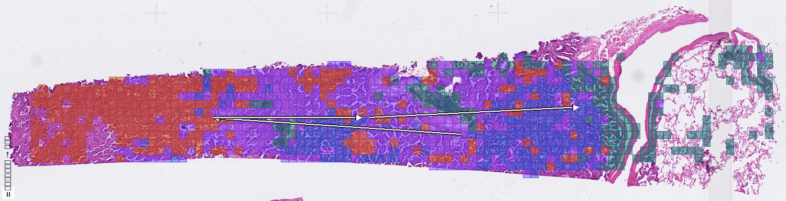
不要把它读成谱系。每张切片来自不同供体，伪时序是在单张切片上 拟合出来的，细胞从未从一个窗口被追踪到下一个窗口。这里成立的是「在这张切片上， P0 的区域与 P3 的区域相接、且 P0 的特征更靠近上游」——一个关于这张切片的方向性 描述，而不是一个病人体内发生过的过程。三张切片的根部模式也各不相同 （P2 / P0 / P1），这本身就说明起点不稳定。
演化动画
每一帧沿轴前进，显示轴正经过的那个模式的 3D 组织块，旁边是它自己的细胞类型 组成。这就是参考文章所说的形态学电影：一部把排序拟合到静态快照上做出来的动画， 而不是观测到的时间。
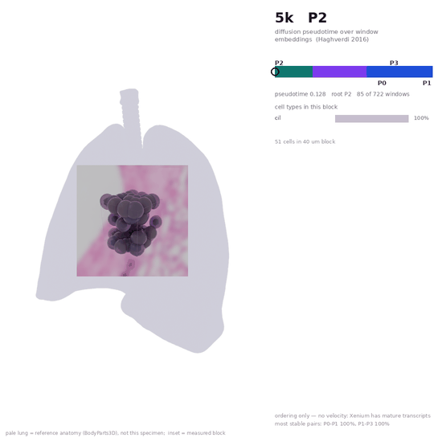

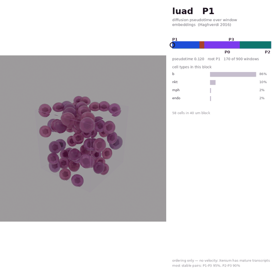
肺是作为方位参照画的，刻意保持淡色且没有纹理。 CODA 小鼠肺项目 把同一个图谱资产列为刻意排除，因为那里的标本是小鼠；这里物种是匹配的，但来源 标注的原则完全相同 —— 轮廓是参考，细胞才是测量，一张同时展示两者的图必须说清楚 哪个是哪个。
8. 与 Annotile 的逐步比较
Annotile 解决的是同一个 问题，而且逐步来看，它大部分做得更好。这张表是照着它的源码读的，不是照它的文字 描述。
| 步骤 | 本项目 | Annotile | 评判 |
|---|---|---|---|
| 细胞标签 | 原样使用全部注释 | keep_label 会丢掉 low_feat_cell、 mph_CXCL9_region、fib?、 lymph_endo?CCL19 以及其它任何带 ? 的标签，只保留 epi?/endo? | 对方更好。我们的最密组织块落在了低质量细胞带上；修复之前 P0 和 P2 正是这样。 |
| 窗口尺寸 | H&E 金字塔的 224 px —— 在 5k 上是 243 µm，lc 上 112 µm， luad 上 104 µm | 在微米空间里定义 400 µm，每张切片完全一致 | 对方更好，而且很关键。用像素定义的瓦片在不同样本上代表不同 数量的组织 —— 我们自己这条链上就是 243 µm、112 µm 和 104 µm，相差 2.3 倍 —— 因此同一个模式在不同样本上不可能含义相同。这是我们这条链里最严重的 缺陷。 |
| 最小细胞数 | ≥ 10 个细胞且 ≥ 30% 染色组织 | ≥ 30 个细胞 | 对方更好；10 太低，会保留组成主要是噪声的窗口。 |
| H&E 配准 | 旋转取自矩阵，尺度从细胞尺寸测得，平移用二阶矩匹配 | 用随数据提供的矩阵，外加一个亮度检查：若中位裁剪值 ≤ 135 则改用逆矩阵 | 努力上我们更多，证据上我们更足。他们那个检查只解决方向 问题，但显然已经够用。我们这套繁复的拟合，动因是矩阵与 OME 元数据之间真实存在 的 2.84 倍分歧 —— 值得追问这个分歧是真实的，还是我们读取单位的方式造成的。 |
| H&E 特征 | 在瓦片上训练的对比学习 CNN，128 维 | 7 个手工特征：RGB 均值、RGB 标准差、梯度幅值 | 我们更好。学习到的嵌入能区分七个摘要统计量区分不了的组织 纹理。这是我们这条链唯一更强的地方。 |
| 染色归一化 | Reinhard，源统计量按切片分别计算，目标固定 | 无 | 原则上我们更好 —— 但这也意味着我们的图像特征和他们的不在同一 尺度上。 |
| 表达特征 | 每张切片各自独立计算的 32 个主成分 | 三张切片共有的 153 个基因，然后取 16 个主成分 | 对方更好。分别从不同切片算出的主成分不在同一坐标轴上， 所以这个表达块在切片之间不可比。他们的共享基因面板解决了这个问题。 |
| 细簇 | k 固定为 64 | k ∈ {6–20}，用轮廓系数选择，留 0.01 的余量 → 10 | 对方更好。64 是 HIPPO 在 227k 个瓦片上的取值；在 3,040 个 瓦片上它是任意的，轮廓系数也说明了这一点。 |
| 合并成表型 | 簇心的 Pearson 相关 → 在相关矩阵上做 GMM，G ≤ 15 | 标准化后的细簇均值向量 → 直接在这些向量上做对角 GMM，G ≤ 8； 相关矩阵不作为输入 | 对方更好，而且这是对 HIPPO 本身的一处修正。相关矩阵的 行数和列数一样多，满协方差并不稳定 —— Annotile 明确指出了这一点。我们是照论文 字面执行的。 |
| 表型命名 | 用簇索引 | 按细胞数排序，P1–P8 | 对方更好；我们的做法让标签在不同运行之间失去意义。 |
| 空间连贯性 | 从图上目测 | _neighbor_agreement —— 相邻窗口同模式的比例， 83.6% | 对方更好。我们是断言存在空间自相关，他们是测量了它。 |
| 3D 模型 | 半径从分割出的二维面积反解，z 在非重叠约束下优化 | 半径来自细胞类型先验，z 在 10 µm 切片内松弛得到 | 对方更好。用一个表观面积反解两个未知量需要可辨识性论证， 而且仍然留下残留重叠需要报告。 |
| 3D 渲染 | 先是手写的体渲染器，然后是用自创参数的 Blender | 用实测参数的 Blender：玻璃方块、按类型的高饱和调色板、底板置于焦平面之后 | 对方更好。我们第一版 Blender 也用了自创的低饱和调色板， 这就是为什么球体渲出来是暗紫色而不是玫瑰色。 |
| 样本数 | 3（5k、lc、luad） | 3 | 持平。补齐第三个样本之后这一项不再有差距；此前只有两个样本时， 跨样本可复现的结论只有一条，补上 luad 之后仍然只有一条，但那条被三重验证了。 |
窗口尺寸和共享基因坐标轴这两点仍然不是表面问题：它们意味着这条链产出的模式无法像 Annotile 的那样在切片之间比较，而跨切片可比正是它主张的核心。如果目标是结果而不是 练习，那么该用的实现是 Annotile。
9. 本项目不能说明什么
- 三个样本。来自 5k、lc 和 luad 的 3,040 个瓦片。HIPPO 用了 209 个病人的 227,000 个瓦片。三个样本足以检验一个结论是否跨样本成立 —— P3 的界面性质就是这样得到的 —— 但远不足以支持任何关于群体的陈述，也没有尝试任何 病人层面的步骤。
- 没有生存终点。HIPPO 用总生存和无病生存来验证它的亚型。 这些 10&x 数据集不附带临床随访，所以这篇论文的预后部分在本数据上无法检验。
- CNN 小，数据也小。1.21M 参数对 3,040 个瓦片，而对方是 227,000 个瓦片上的 ResNet50。对比损失从 3.87 降到 0.79，说明它确实学到了东西， 但图像分支是这个移植里最弱的一环，消融的排序要放在这个前提下读。
- Reinhard 归一化是跨样本做的，这是刻意的。参考统计量取自第一张 切片（5k），三张都被映射到它上面。把每张各自归一化，恰恰会抹掉聚类本该看到的那些 样本间差异。luad 的 L 均值是 53.09，被拉到 68.35。
10. 复现
python tools/fetch_10x_all.py # 矩阵 + 坐标 + H&E
python tools/register_final.py # 旋转、尺度、平移
python tools/extract_tiles.py --tag 5k # HIPPO 式切块 + 三种模态
python tools/extract_tiles.py --tag lc
python tools/train_cnn.py --tiles work/5k_tiles.npz work/lc_tiles.npz \
--epochs 80 --clusters 64 --out work/cnn_tiles.npz
python tools/cluster_tiles.py --tags 5k lc --img --expr --ann --name fused
python tools/make_figures.py --name fused --tags 5k lc
python tools/build_3d.py --tag 5k --block 1 --slab-um 6 # 二维 -> 三维